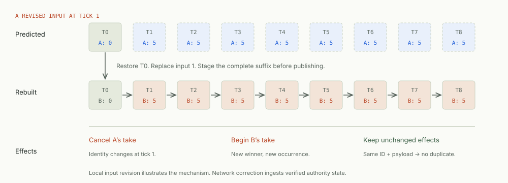

K
ENTITY FIELDS
Kit
Start with script entities. Declare which player or authority writes each field. Use commands for shared interactions and the simulation lane for fixed-tick prediction.
gd:"owner"gd:"replicate"@(gd_tick)Write Odin scripts and attach them to Godot nodes. Use typed engine bindings, build multiplayer with Kit or Replay, and export to desktop or the web.
//gd:extends Node2D
package game_scripts
import gd "godot:godot"
Mover :: struct {
owner: gd.Node2d,
speed: f32 `gd:"export,default=120"`,
}
mover_process :: proc(self: ^Mover, dt: f64) {
position := gd.node2d_get_position(self.owner)
position.x += self.speed * f32(dt)
gd.node2d_set_position(self.owner, position)
}START BUILDING
Start with a script, a multiplayer model, or an export target. Each guide links to the relevant API reference.
Attach an Odin script to a node, expose a property, and run a frame callback.
Build a moving node → 02 / MULTIPLAYERChoose who accepts gameplay changes and how clients predict them. Compare Kit entities with Replay frames.
Kit or Replay → 03 / EXPORTCompile for the target, configure Godot export templates, and check the exported build.
Desktop and browser →GODOT SCENES AND RESOURCES
Place nodes, edit Resources, connect signals, and use the Inspector. Write script state as Odin structs and behavior as procedures. The build generates their Godot registration.
For a node script, self points to its data. self.owner points to the Godot node. Pass self.owner to engine calls and self to procedures that operate on script state.
120.0MULTIPLAYER
Both frameworks support cooperative play and server-authoritative prediction. They differ in how you organize the state that must be restored after a correction.
Start with script entities. Declare which player or authority writes each field. Use commands for shared interactions and the simulation lane for fixed-tick prediction.
gd:"owner"gd:"replicate"@(gd_tick)Keep mutable gameplay state in a typed World outside the scene tree. Record inputs and restore frames when the authority corrects a prediction. Godot views display the resulting state and events.
World + input → next frameExperimentalBUILT WITH ODIN × GODOT
Scrapyard is an arena shooter built with Odin and Godot. Play the browser build, then use the repository's Replay port to trace a feature from input to simulation and scene.
Play Scrapyard ↗Read the contributor guide → LIVE BROWSER BUILD ↗
LIVE BROWSER BUILD ↗LEARN THE SYSTEM
Follow a contested pickup through Kit and Replay, then step through its correction. The guide connects the diagrams to runnable examples and source files.
Open the illustrated field guide →